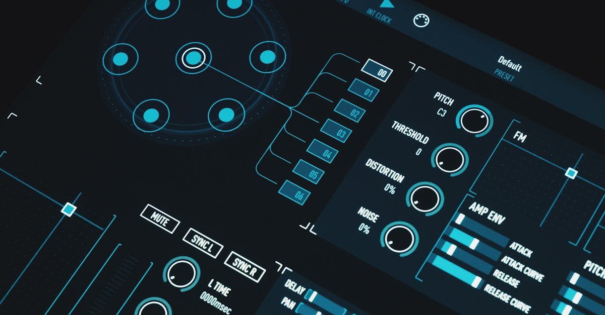
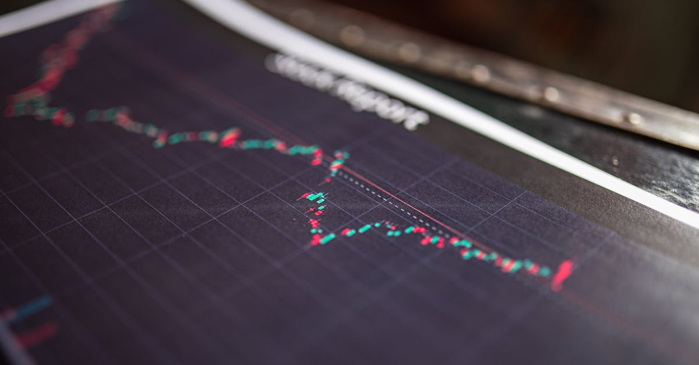
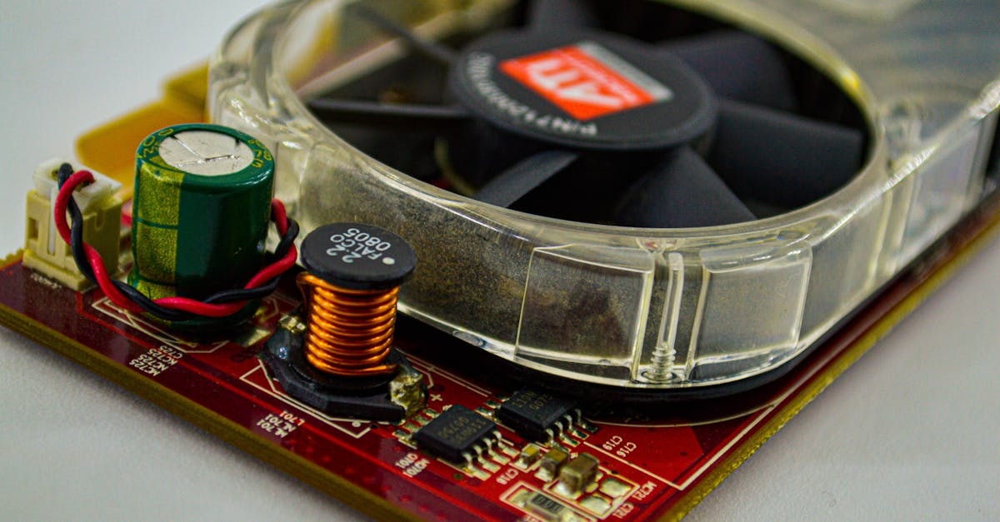
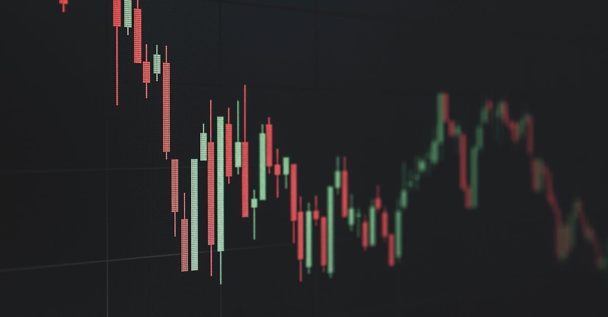
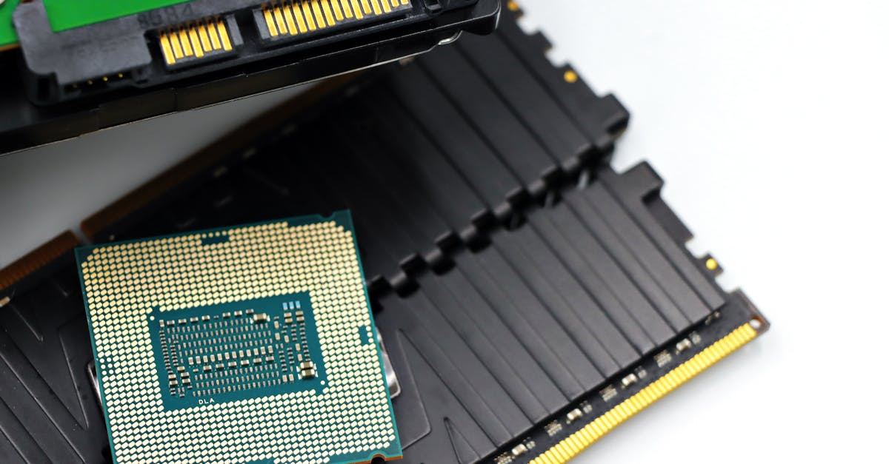
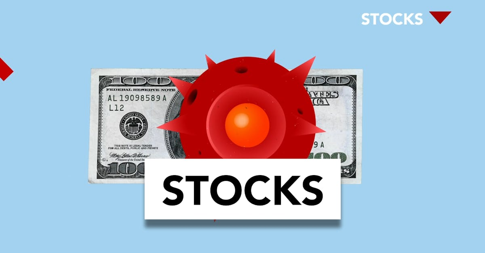

Le boom pétrolier américain : un défi d'ingénierie
Pourquoi il est difficile de recréer un boom pétrolier américain et les leçons pour les investisseurs avisés.

IA et Investissement : La Révolution au Moyen-Orient et en Afrique
Découvrez comment l'IA transforme l'investissement au Moyen-Orient et en Afrique, optimisant l'épargne et les placements 24h/24.
Pétrole : Les tensions à Hormuz font flamber les prix
Analyse de l'impact de la saisie d'un navire iranien par les USA sur les prix du pétrole et implications pour vos investissements.

IA et Investissement : Le Nouveau Jeu de Bloomberg
Découvrez comment l'IA redéfinit l'investissement. Bloomberg lance un quiz, illustrant l'importance de l'intelligence artificielle dans la finance.

Europe : Les élections chamboulent les marchés
Les récents résultats électoraux en Europe, notamment en Hongrie et en Italie, envoient des signaux forts aux investisseurs. Analyse des implications pour vos placements.

IA : Le boom du cuivre, une course folle pour l'Amérique
L'essor de l'IA crée une demande sans précédent pour le cuivre. Découvrez pourquoi les États-Unis peinent à répondre et comment cela impacte l'épargne.

IA et Finance : Le Futur de l'Épargne Expliqué
Découvrez comment l'IA révolutionne l'épargne et l'investissement. Analyse des tendances post-marchés et l'importance de l'automatisation.

Investissement : Les marchés prisent le retour de l'appétit pour le risque
Les investisseurs délaissent les actifs refuges pour des placements plus risqués, pariant sur une trêve géopolitique. Analyse pour une épargne intelligente.

Guerre, inflation et stagflation : l'IA pour protéger votre épargne
L'escalade au Moyen-Orient ravive la menace de stagflation. Découvrez comment l'IA peut optimiser vos placements face à l'incertitude économique mondiale.
Chine : La Fusion qui Crée un Géant Financier de 86 Milliards $
Analyse de la fusion entre Orient Securities et une autre firme chinoise, créant un mastodonte de 86 milliards $ et ses implications pour l'investissement mondial.
Victoria : Transports Gratuits, Comment Épargner Malin Face à l'Inflation ?
L'Australie lance les transports gratuits. Découvrez comment ces mesures impactent votre épargne et comment l'IA peut optimiser vos finances.

Hack DeFi : 300M$ volatilisés, le choc de la contagion
Un piratage massif de 300 millions de dollars dans la DeFi révèle les failles et l'impact sur l'épargne. Analyse et perspectives IA.

Madison Air : IPO record, leçons pour l'épargne intelligente IA
L'IPO historique de Madison Air secoue l'industrie. Découvrez les stratégies gagnantes et comment l'IA peut optimiser vos placements.
Pétrole: Un pipeline Irak-Turquie pour défier Hormuz et stabiliser les marchés
L'AIE propose un pipeline Irak-Turquie pour sécuriser l'approvisionnement pétrolier, réduisant la dépendance à Hormuz. Impact sur les marchés et l'investissement IA.
Immobilier de Luxe : Le succès de Pavilia Farm III, leçons pour l'épargne
Analyse du succès fulgurant de Pavilia Farm III à Hong Kong et ses implications pour l'épargne intelligente et l'investissement automatisé par IA.
Aevex et son IPO à 320M$ : Un Signal Fort pour l'IA en Finance
L'introduction en bourse d'Aevex pour 320 millions de dollars met en lumière le potentiel de l'IA. Découvrez comment cela redéfinit l'épargne et l'investissement automatisé.

Pénurie de RAM : Faut-il s'inquiéter pour l'IA ?
La pénurie mondiale de RAM pourrait durer jusqu'en 2030. Quel impact sur l'IA, l'innovation et vos investissements ? Analyse pour Epargne IA.

Bourse : La Paix au Moyen-Orient Relance les Marchés
Après une période d'incertitude géopolitique, les marchés financiers rebondissent. Analyse de l'impact sur vos placements intelligents.
L'IA dans la Beauté : Révolution et Opportunités d'Épargne
Découvrez comment l'intelligence artificielle transforme l'industrie de la beauté, de la personnalisation à la recherche, et comment cela crée des opportunités d'investissement pour votre épargne.
Guerre Iran : L'Amérique Mieux Armée Face au Chaos Économique ?
Hank Paulson estime que les USA résisteront mieux aux retombées d'une guerre Iran. Analyse des impacts et de la résilience économique américaine.

Crise Iran : Inflation, Taux et Risques Marché
Hank Paulson alerte sur l'impact de la crise iranienne : inflation, taux élevés, dette souveraine et relations sino-américaines. Analyse pour votre épargne.
Stripe et Airwallex : la guerre des titans de la fintech
Stripe et Airwallex, autrefois proches, s'affrontent désormais sur le marché des paiements internationaux. Analyse pour votre épargne.
EUR/HUF : Goldman Sachs revoit ses prévisions, l'IA décrypte l'impact
Goldman Sachs abaisse ses prévisions EUR/HUF. Analyse des facteurs fiscaux et inflationnistes et leur impact sur vos investissements avec l'IA.

Short Sellers vs IA : Les Fondamentaux Face à la Machine Intelligente
Carson Block de Muddy Waters face à l'IA : l'analyse fondamentale est-elle dépassée ? Impacts sur les marchés et l'épargne intelligente.

HDFC Bank: L'Inde, Moteur de Croissance pour Votre Épargne IA?
La croissance fulgurante de HDFC Bank en Inde révèle les dynamiques des marchés émergents. Découvrez comment l'IA peut optimiser vos placements.

Accord Iran : L'IA décrypte l'impact sur vos placements
L'Iran au cœur des tensions géopolitiques. Découvrez comment l'IA optimise votre épargne face à l'incertitude des marchés internationaux.

L'IA : une révolution économique sans précédent ?
Les économistes sous-estiment-ils l'impact de l'IA ? Analyse des différences avec les révolutions technologiques passées et implications pour votre épargne.
L'IA va-t-elle Réécrire l'Économie ? Ce que les Économistes Oublient
L'IA va-t-elle bouleverser le marché du travail comme jamais ? Analyse des risques et opportunités pour l'épargne et l'investissement.
IA et Emploi : Les Économistes sous-estiment-ils la menace ?
L'IA menace-t-elle vraiment nos emplois ? Alex Imas défie le consensus économique. Découvrez l'analyse et comment l'épargne intelligente peut vous protéger.

Bangladesh-FMI: Réformes Cruciales et Impact sur Votre Épargne Intelligente
Le Bangladesh négocie des réformes clés avec le FMI. Découvrez l'impact de ces décisions sur les marchés émergents et votre stratégie d'investissement automatisée.

Lufthansa: 100 ans de défis, l'IA éclaire l'investissement
Le centenaire de Lufthansa : entre fête et défis. Comment l'IA analyse les turbulences du secteur aérien pour une épargne intelligente.
Carburant Australie: Le plein est fait, la sérénité revient
L'Australie renforce ses réserves de carburant. Une bonne nouvelle pour la stabilité économique et les investissements intelligents.
Chômage US : La baisse des demandes favorise l'épargne IA
Les demandes d'allocations chômage aux États-Unis chutent. Analyse pour l'épargnant averti et l'investisseur automatisé par IA.
Raffinerie Dangote : le nouveau pilier du kérosène européen
Découvrez comment la raffinerie de Dangote en Afrique devient cruciale pour l'approvisionnement en kérosène de l'Europe, impactant investissements et marchés.
Slash : La startup IA qui défie les géants de la finance
Découvrez Slash, la jeune pousse valorisée 1,4 milliard qui utilise l'IA pour révolutionner la gestion financière des entreprises.